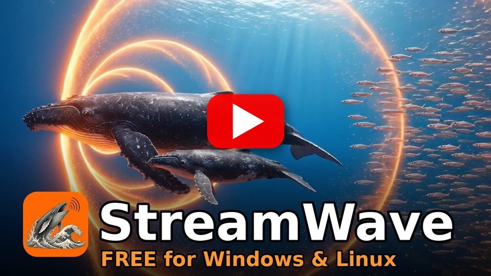

See it in action
The actual StreamWave UI, running with a demo project.


StreamWave is a free, open-source recorder and editor for streamers, podcasters and voice creators. One button to record, one click to sound like a studio, and it stays locked to OBS.
A quick look at StreamWave in under a minute.

▶ Watch on YouTube · more demos on Derek's channel
Built for real creator setups: OBS running, Discord open, one mic shared between them.
Record, pause and stop together. Scene changes become markers. Multi-track OBS recordings import as separate tracks.
One click analyses your voice and builds a clean chain: denoise, EQ, de-ess, compress, -16 LUFS. Fully editable.
A rolling buffer keeps the last 60 seconds. Said something great before hitting record? Save it.
Move a slider and hear it instantly. Exports use the same engine, so the file matches what you heard.
Takes are written continuously and repaired after a crash or power cut. Unplugged mic? Your take is kept.
WAV, FLAC, MP3, Ogg, Opus, AAC, AIFF and audio from MP4/MKV in. WAV, FLAC, MP3, Opus, Ogg and more out, with tags.
Never takes exclusive control of your microphone. OBS, Discord and your browser keep working alongside.
Warnings for clipping, too quiet, a dead channel or mains hum, before they ruin a recording.
Cut, copy, paste with full undo. Originals never change. Projects autosave and recover after a crash.
The actual StreamWave UI, running with a demo project.
StreamWave talks to OBS 28+ over the built-in WebSocket server. Turn it on in OBS under Tools → WebSocket Server Settings and you're connected.
Classic desktop audio editors are powerful and battle-tested. StreamWave focuses on a creator's everyday workflow.
| Feature | StreamWave | Typical legacy editor |
|---|---|---|
| OBS sync (record together, scene markers) | ✓ Built in | — |
| Import OBS multi-track recordings as separate tracks | ✓ Automatic | Manual |
| Bring in Audacity 3 projects (.aup3) | ✓ Read-only import | Varies |
| Put edited audio back into the video | ✓ One click | — |
| One-click voice cleanup to a loudness target | ✓ Studio Sound | Several separate steps |
| Hear effect changes live while playing | ✓ | Often preview-only |
| Rolling "save the last 60 s" buffer | ✓ | — |
| Recording survives crashes and power cuts | ✓ Auto-repair | Varies |
| Mic shared with Discord/OBS while recording | ✓ Always | Depends on settings |
| Non-destructive editing with full undo | ✓ | ✓ |
| Open formats (WAV, FLAC, MP3, Opus, Ogg) | ✓ | ✓ |
| Free and open source | ✓ MIT | Often |
Coming from Audacity? If you've used Audacity, you'll feel at home, with live effects, OBS sync and recordings that survive a crash. Use File → Import Audacity Project… or drop an .aup3 on the window; your file is only read, never changed. StreamWave isn't a full Audacity replacement (no plug-ins or spectral editing yet). Audacity® is a trademark of its respective owners; StreamWave isn't affiliated with or endorsed by Audacity or Muse Group.
Comparison reflects a typical general-purpose desktop audio editor out of the box, without plugins.
Version 0.8.0. The app can update itself from Help → Check for updates.
🛡 The installer isn't code-signed yet. If Windows SmartScreen appears, click More info → Run anyway.